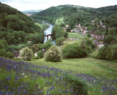
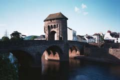

We made a late start, after spending a long time
talking at breakfast with the other guests, a retired GP and his
wife, from Kent. We had a very pleasant morning walking
through meadows beside the Wye.
After the town of Bigsweir we went back up into woods, and had several miles again on Offa's Dyke, with wild garlic around us. There was a pretty view down to the Wye at Redbrook, before we descended to it. We sat on a bench on the village green to eat our sandwiches, before checking out the old disused railway bridge which we had seen from above. After that it was up to Kymin, a hilltop with a curious "Naval Temple" celebrating victories of the Royal Navy, and then back down (the 800 feet) to Monmouth. From a phone box in Agincourt Square (named in honor of Henry V, who was born in Monmouth), we telephoned Iris Jones, our B&B hostess. She had said to do this, and when we phoned she said she'd meet us at the Green Dragon, a pub just beyond the Monnow Bridge. She actually found us as I was photographing the bridge, and she walked us to her house on a path we'd have had trouble finding. We sat for awhile at her kitchen table, drinking orange juice and eating cookies, and talking with Iris and her daughter, granddaughter, and great-granddaughter (they were just visiting her). We then walked back to town, again crossing and admiring the Monnow Bridge, with its 13th century fortified gatehouse. We had dinner at the Green Dragon and then walked around, seeing the scanty remains of the castle where Henry V was born, and enjoying the town.
| Previous Day | Next Day | Home Page |